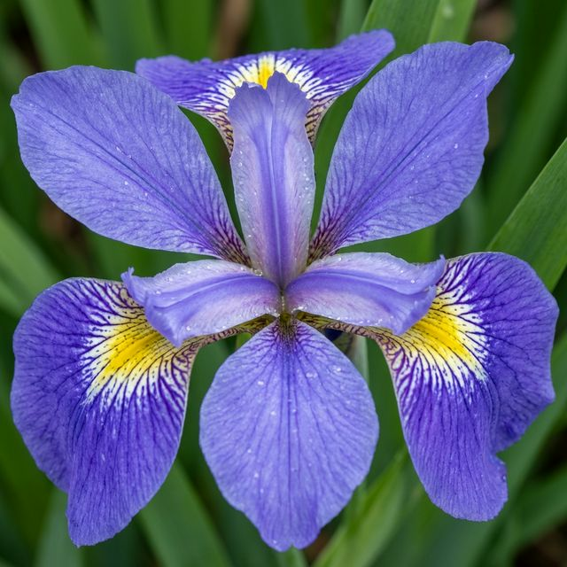
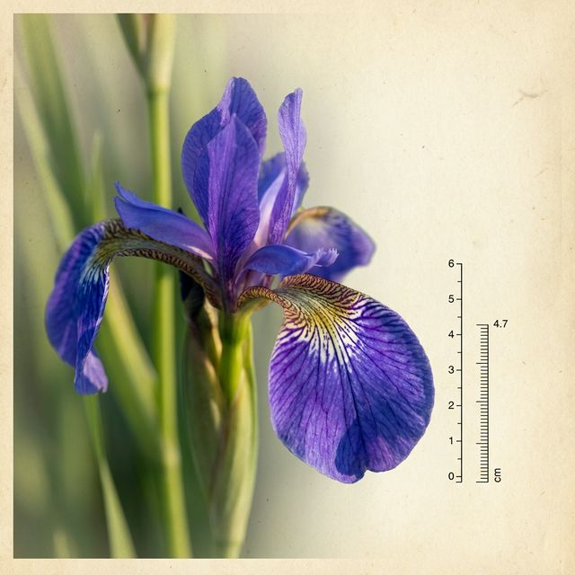
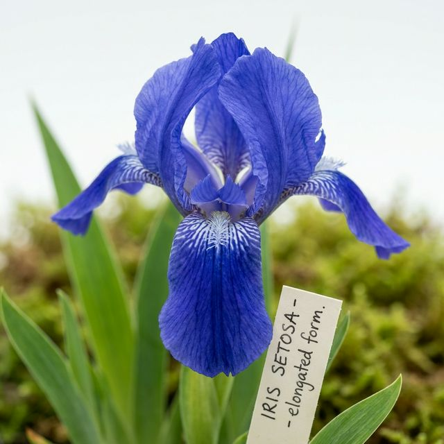

A

B

C
正しい品種と思われる画像を選択してください
正解！ 品種: Versicolor
この個体は Sepal Length 6.3cm, Petal Length 4.7cm という Versicolor の平均的な特徴を備えています。 画像Aは、Versicolor 特有の青紫色の花弁と、基部の黄色の斑紋を正確に再現しています。 境界線上の個体でしたが、Petal の幅が Virginica ほど広くない点が識別のポイントでした。